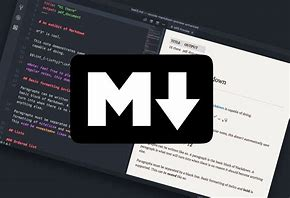

Get Started

MINIMALISM
Register
Register for an account to get started. You can register by clicking the register button on the top right corner of the page. You will be redirected to the registration page where you will be required to fill in your details. Once you have filled in your details, click the register button to register.

LANGUAGE
Why Markdown
Markdown is a lightweight markup language that you can use to add formatting elements to plaintext text documents. Created by John Gruber in 2004, Markdown is now one of the world’s most popular markup languages.
Learn the basic syntax of Markdown by visiting the Markdown Guide.